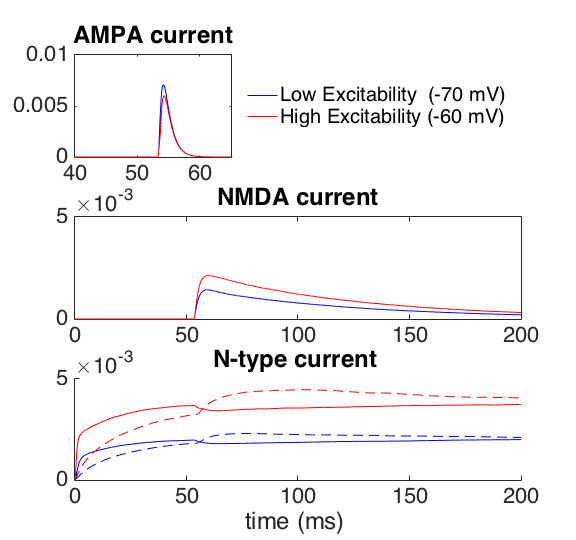
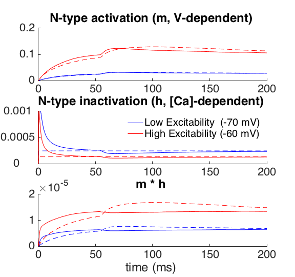
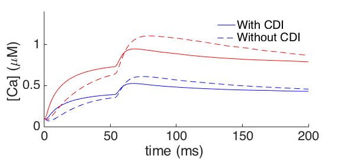
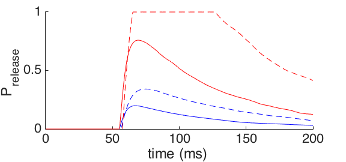
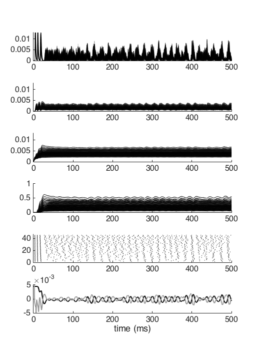

Code for generating Figures 3, 4, 5, & 7 of the following paper:
Osinski & Kay (2016), Granule cell excitability regulates gamma and
beta oscillations in a model of the olfactory bulb dendrodendritic
microcircuit, J Neurophysiol.
doi: 10.1152/jn.00988.2015
Code is designed to run in MATLAB R2015b
Implementation is by Boleslaw Osinski , to whom questions should be
addressed boleszek@uchicago.edu
---------------------------------------------------------------------
The zipped folder includes the following .m files:
InitNetwork_GCE.m - This function initializes network parameters
OB_network_GCE.m - This is the numerical simulation of the
Mitral-Granule network
ILFP_GCE .m - This is a wrapper function for
OB_netwrok_GCE.m. All simulation products as well
as the simulated LFP are generated by this
function
ParamSweep_GCE.m - This is a wrapper function around ILFP_GCE.m. It
evaluates the model for every combination of the
two parameter inputs
Rasterplot.m - Generates raster plot
---------------------------------------------------------------------
Usage:
1. Unzip GCE_ModelDB.zip
2. Open MATLAB. Set MATLAB path to unzipped folder's directory. This
can be done with MATLAB prompt commands like (where additional folders
in the cd command may be necessary to find the new GCE_ModelDB folder)
cd GCE_ModelDB
addpath(pwd)
3. Open Fig3, Fig4, Fig5, or Fig7 directory and run the associated
script (i.e. Fig3script.m) for producing the figures. Each folder
includes it's own parameter file (i.e. OB_params_GCE_Fig3.txt)
Notes:
- Fig3script.m runs quickly and produces figures like those in the
paper. I remade the figures for the Methods section (including Figure
3) at the very beginning of the revision process, and there were
subsequent minor changes to the final model (such as adjusting
changing the proportionality between Ca concentration and N-type
current and [Ca] threshold for GABA release). The slightly different
trajectories in Figure 3 resulting from these changes do not change
the network behavior of the model.:
Fig 3 A

Fig 3 B

Fig 3 C

Fig 3 D

- Fig4script.m runs for ~ 4min
Fig4script.m uses the tightfig function which can be found at the
MATLAB file exchange at
http://www.mathworks.com/matlabcentral/fileexchange/34055-tightfig
Fig 4 A.i

- Fig5script.m runs for ~ 3.5hr
- Fig5script.m uses the shadedErrorBar function which can be found at
the MATLAB file exchange at
http://www.mathworks.com/matlabcentral/fileexchange/26311-shadederrorbar
and the coherencycpt function from the Chronux toolbox (Version 2.11)
which can be downloaded at http://chronux.org
- Fig7script.m runs for ~ 1.5hr